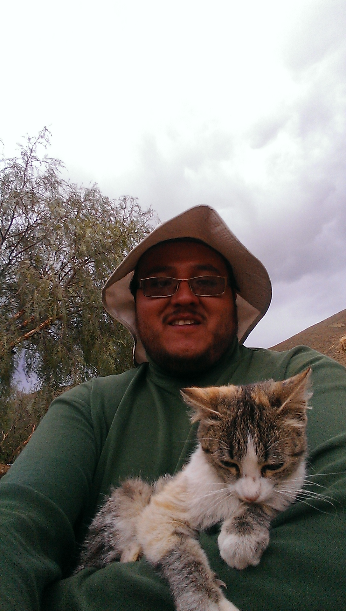

Hoja de Vida de
Humberto Balderrama
Información Personal

Perfil
Profesión
Magister en Gestión de la Comunicación
Licenciado en Psicología
Licenciado en Comunicación Social
Idiomas
Español
Inglés
Francés
Portugués (solo lectura)
Datos Personales
Lugar de Nacimiento
La Paz - Bolivia
Fecha de Nacimiento
30 de Julio de 1984